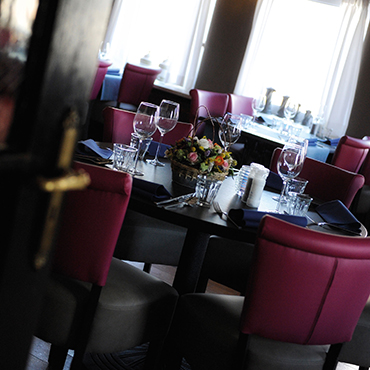
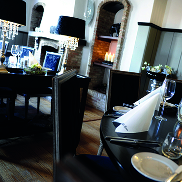
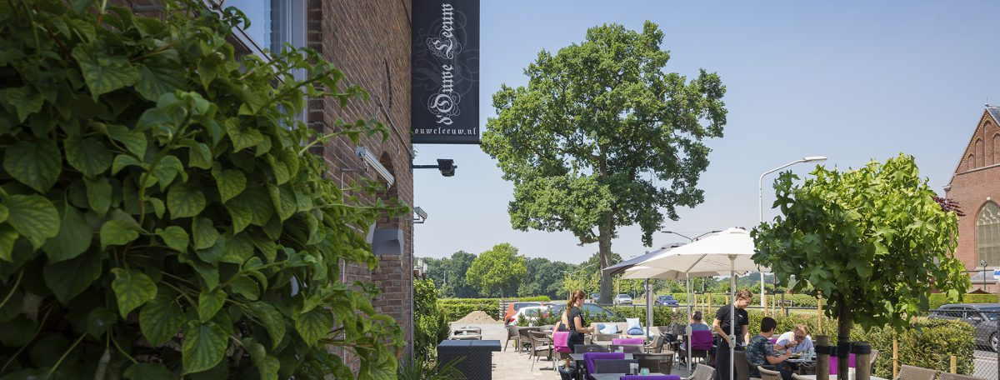
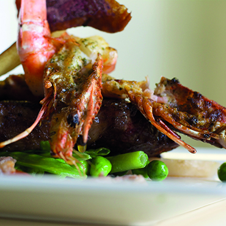
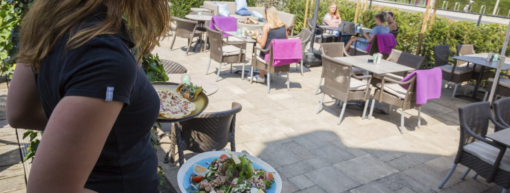

Ossendrechtseweg 2, Hoogerheide
Een bourgondische beleving aan de Brabantse Wal.
Na een dag fietsen of wandelen schuift u bij ons aan voor een gezellige avond dineren in een ongedwongen sfeer. Franse klassiekers en internationale gerechten, van eenvoudig en vertrouwd tot wat exclusiever.
Woensdag tot en met zondag open van 17:00 tot 21:00

Beste gast,
Wat fijn dat u bij ons aanschuift. Hier draait alles om genieten in een ongedwongen sfeer. In de zomer geniet u op ons terras, waar zon en schaduw elkaar afwisselen en altijd een plekje te vinden is dat bij u past. Wanneer de dagen korter worden, verwelkomen wij u graag in een warme, huiselijke ambiance: de ideale setting om samen te proosten.
De kaart is met veel liefde samengesteld: een variatie van Franse klassiekers en internationale gerechten, zodat er altijd iets is dat past bij uw smaak en bij het moment. Kijk vooral ook eens naar de specialiteit van het huis, een menu vanuit de roots van de chef in Bosnië.
Met gastvrije groet,
uw chef en gastheer


Romantisch & gezellig
Een prachtige omgeving aan de Brabantse Wal, ideaal na een dag fietsen of wandelen.
Gastvrijheid & ambiance
Zomers op het terras, in zon of schaduw. In de winter een huiselijke ambiance binnen.
Hoogstaand gevarieerd menu
Gerechten uit de Franse en internationale keuken, van eenvoudig tot exclusief. Voor ieder wat wils.



Wildseizoen
Zolang het seizoen duurt, staat naast de vaste kaart een aparte wildkaart.
Voorgerechten
Wildbouillon
9,50dubbel getrokken wildbouillon, bospaddenstoelen
Wildragoût
16,00huisgemaakt, pasteitje
Wildparade
19,00wilde eend paté, gerookte eendenborst, vijgenchutney, wildbouillon
Hoofdgerechten
Konijnenbout
21,00 / 2 stuks 26,00tijm, knoflook, jus
Hazenpeper
26,00heerlijke 'hachee' gemaakt op grootmoeders wijze, aardappelkroketjes
Eendenborst
29,00dadelpuree, Chioggia, knoflook, jus, sinaasappel
Hert
31,00hertenhaas, rode port, peer, Parmezaanse kaas
Nagerechten
Flaugnarde
12,00peer, braam, Calvados, luchtig beslag uit de oven, vanille-ijs
Bosvruchten tiramisu
12,00bosvruchten, limoncello, witte chocolade
Specialiteit van het huis: traditioneel Balkan-menu
Een menu samengesteld vanuit de roots van de chef in Bosnië: de Balkanstreek. Door de lange bereidingstijd alleen op bestelling, vanaf 2 personen. Enkele dagen vooraf bestellen is voldoende; de prijs hoort u bij het bestellen.
Bel om het Balkan-menu te bestellenVoorgerecht
Balkanska plata Balkan plateau
Diverse kleine authentieke gerechten van de Balkanstreek: suho meso (gerookte ribeye), ajvar (gegrilde paprikatapenade), sudžuk (gerookte worst), halloumi (gegrilde kaas), ćevapčići (gegrilde kruidige worstjes), aïoli, olijven en grillbrood. Met een šljivovica: aperitiefje van gedistilleerde pruim, wel een beetje sterk!
Hoofdgerecht
Jagnjeća plećka iz rerne gegaarde lamsbout uit de oven, 600 gr p.p.
Bereid op traditionele wijze: langzaam gegaard in de oven met knoflook, tijm, roseval aardappelen, ui en jus, geserveerd met šopska salade (frisse salade met tomaat, komkommer, paprika, ui en geraspte witte kaas).
Nagerecht
Baklava sa orasima baklava met walnoten
Traditionele Bosnische baklava met walnoot, pistache-vanille-ijs, crème anglaise en slagroom.
of
Palačinka sa čokoladom i orasima palatschinke met chocolade en walnoten
Pannenkoek met warme Callebaut chocoladesaus, walnoot en vanille-ijs.

De Sparerib-runner: thuis genieten
Thuis genieten van onze maaltijden? Dat is geen probleem. Via onze bezorgdienst brengen wij de lekkerste gerechten bij u thuis. Lekker en gemakkelijk!
Reserveren & contact
Reserveren kan telefonisch via 0164-613058.
Bistro d'Ouwe LeeuwOssendrechtseweg 2
4631 BC Hoogerheide
reserveren@ouweleeuw.nl Route plannen
Openingstijden
| Maandag | gesloten |
|---|---|
| Dinsdag | gesloten |
| Woensdag | 17:00 – 21:00 |
| Donderdag | 17:00 – 21:00 |
| Vrijdag | 17:00 – 21:00 |
| Zaterdag | 17:00 – 21:00 |
| Zondag | 17:00 – 21:00 |